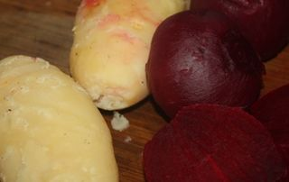
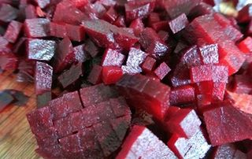
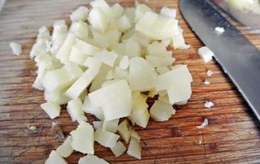
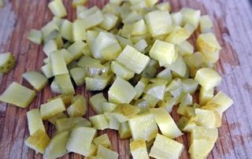
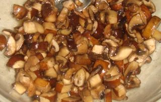
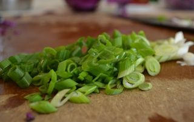
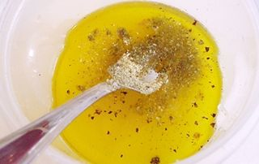
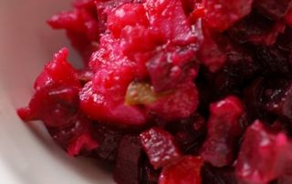

Шаг 1: подготавливаем овощи.

Итак, прежде чем приготовить такой овощной салат, как винегрет, необходимо отварить картофель и свеклу. Поэтому хорошо для начала промываем под проточной теплой водой овощи и после выкладываем ингредиенты в глубокую кастрюлю. Заливаем емкость обычной холодной водой так, чтобы жидкость полностью покрывала компоненты и ставим кастрюлю на большой огонь. После того, как вода закипит, делаем огонь меньше среднего и накрываем емкость плотно крышкой. Варим картофель в мундире в течение 35-45 минут и после достаем его из емкости с помощью вилки и перекладываем в чистую тарелку. А вот свекла готовится дольше, поэтому продолжаем ее варить еще в течение 45-50 минут. Внимание: время варки овощей может варьироваться в зависимости от сорта и спелости корнеплодов. Лучше всего время от времени проверять степень готовности картофеля и свеклы вилкой, чтобы овощи не переварились и не потеряли свои вкусовые качества. Как только свекла будет готова, выключаем конфорку, а емкость с этим компонентом ставим под струю холодной воды, чтобы после можно было бы с легкостью снять с овоща шкурку. И затем перекладываем буряк в тарелку с картофелем. Воспользовавшись ножом, снимаем кожуру с картофеля и со свеклы и после – перекладываем очищенные компоненты обратно в тарелку.
Шаг 2: подготавливаем свеклу.

Выкладываем очищенную свеклу на разделочную доску и с помощью ножа измельчаем ингредиент на небольшие по размеру кубики. Для этого лучше всего сначала разрезать корнеплод на две половинки, а затем каждую часть нарезать вдоль еще на несколько частей, а после поперек. Измельченный компонент перекладываем в глубокую миску и поливаем его 1 столовой ложкой оливкового масла.
Шаг 3: подготавливаем картофель.

Теперь картофель выкладываем на разделочную доску и с помощью того же острого инвентаря нарезаем ингредиент на небольшие кубики, по размеру такие же, как и свекольные. Измельченный картофель перекладываем в миску со свеклой.
Шаг 4: подготавливаем маринованные огурцы.

Выкладываем на разделочную доску маринованные огурцы и срезаем ножом с ингредиента хвостики. После этого каждый огурец измельчаем на квадратики такие же, как и свекла с картофелем. Мелко рубленый компонент перекладываем в емкость с другими измельченными ингредиентами. Внимание: для того чтобы винегрет получился более сочный и с пикантной кислинкой, лучше всего использовать маринованные бочковые огурцы.
Шаг 5: подготавливаем грузди.

Маринованные грибы выкладываем на разделочную доску и, воспользовавшись ножом, измельчаем ингредиент на небольшие кусочки. После этого перекладываем грузди в миску с другими овощами.
Шаг 6: подготавливаем зеленый лук.

Зеленый лук слегка промываем под проточной водой. После, отряхнув слегка ингредиент над раковиной, выкладываем его на разделочную доску. С помощью ножа измельчаем лук и затем перекладываем его в общую миску.
Шаг 7: готовим заправку.

В пиалу выливаем такие ингредиенты, как уксус и оставшееся оливковое масло. Также в емкость добавляем соль по вкусу, сахар и горчичный порошок. С помощью столовой ложки или вилки перемешиваем все ингредиенты до образования однородной массы, а также до тех пор, пока на дне пиалы не будут плавать кристаллики сахара и соли.
Шаг 8: готовим винегрет старорусский.

Итак, все измельченные ингредиенты для приготовления винегрета старорусского перемешиваем до однородности. Воспользовавшись столовой ложкой, перекладываем овощной салат в салатницу и после – поливаем все заправкой. Внимание: перемешивать блюдо не нужно, так как это необходимо будет сделать уже перед самой подачей.